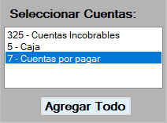

Presupuestos presenta la posbilidad de crear un presupuesto o generar vistas del presupuesto, para crear un presupuesto se tienen
las opciones de:
-Ejercicio del Presupuesto donde se elige el año al que se va a presupuestar.
-Seleccionar cuentas, se puede seleccionar unas cuentas en especifico dando doble click a cada cuenta,
o precionando el boton agregar todo selecciona todas la cuentas.

-Cuentas a Presupuestar, muestra las cuentas enlistadas que apareceran en el presupuesto.
-Seleccionar Departamento, se debe seleccionar el departamento al que se le hara el presupuesto.
-Opciones de Prellenado, habilita las opciones de pre llenado.
-Tomar como saldo, permite obtener los cargos o abonos o resta de los mismo de cada cuenta y
llenar con esos datos el presupuesto.
-Porcentaje de incremento permite modificar todo el presupuesto multiplicado por ese pocentaje a crear a partir del saldo anterior mente tomado.
No. Cuenta: Muesta el numero de cuenta registrado en la base de datos.
Nombre: Muestra el nombre de la cuenta registrada en la base de datos.
Enero a Diciembre: muestra los datos obtenidos de la tabla anterior, estos datos pueden ser manipulados en su totalidad
Boton Editar: Permite regresar a la ventana anterior y modificar los parametros del presupuesto.